Woahh!! Your sense of direction leads you to the Beach👏
Here are top 5 beach destinations in India that the waterbabies might want to explore.
1. Kovalam
Kovalam is a small coastal town in the southern Indian state of Kerala, south of Thiruvananthapuram.
Kovalam Beach is One of Kerala's most developed beaches,popular tourist destination of the country.
known as beach town because the site has three adjacent curved beaches.
one of the finest beaches in the Indian coastline and is often referred to as 'paradise of the south'
There is a multitude of interesting activities that one can do here.
Water Sports that you can do here
> Kayaking
> Sea Surfing
> Parasailing
> Speed Boat Safari
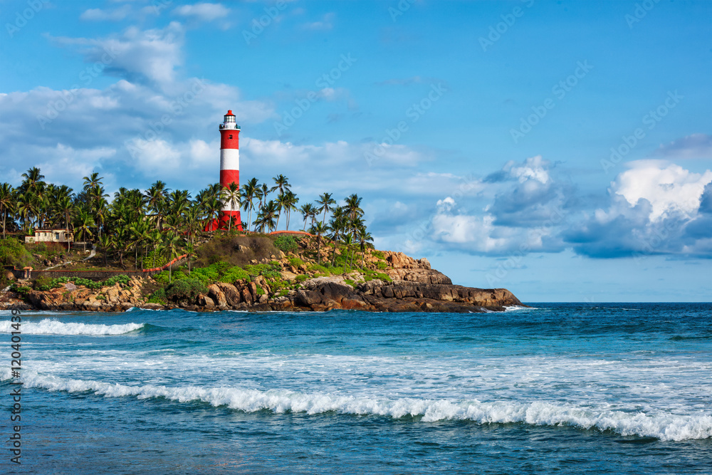
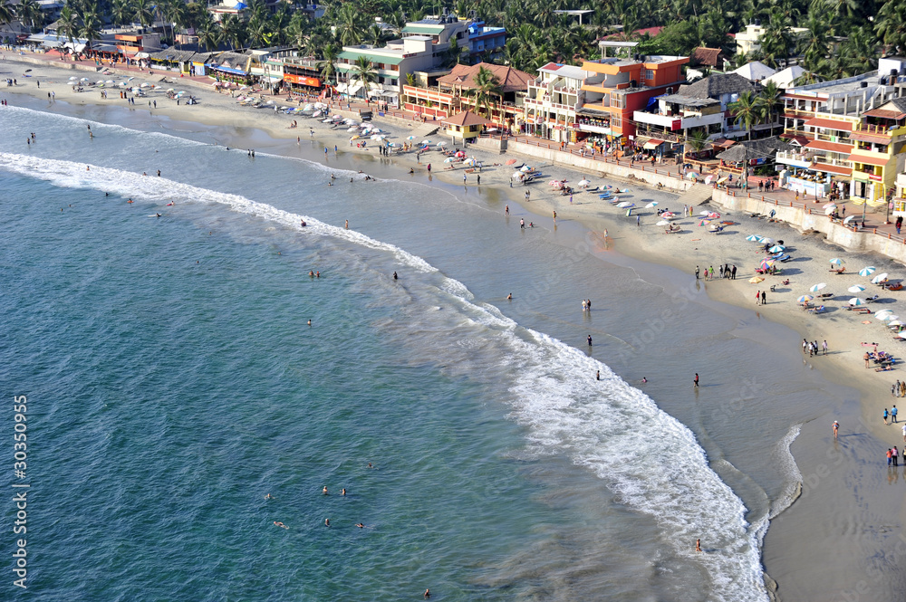
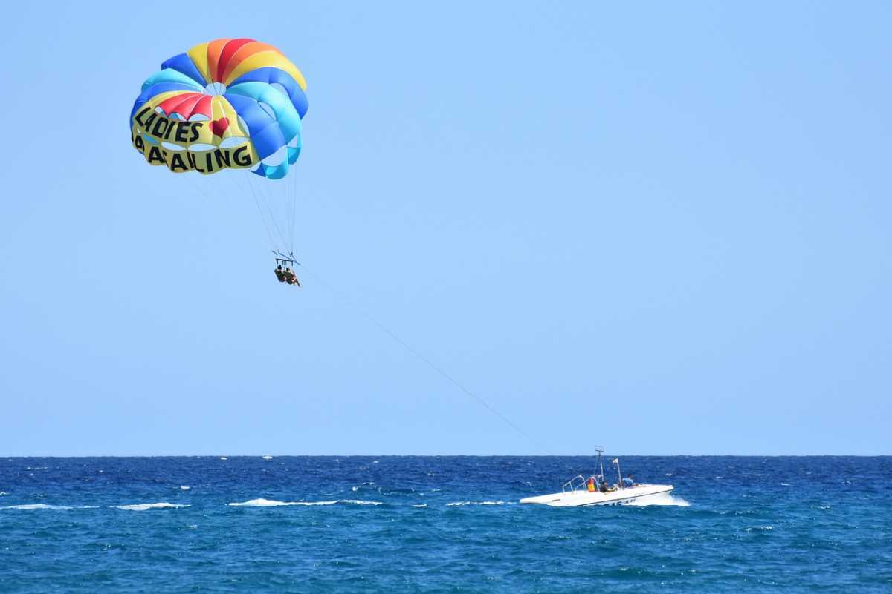
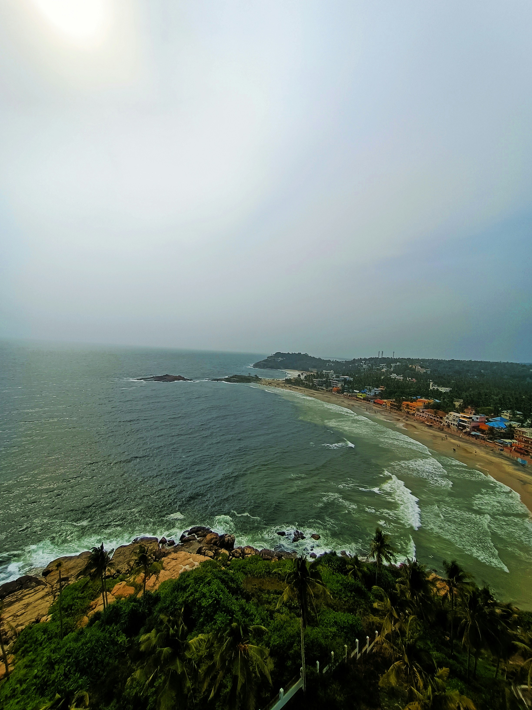
2. Varkala
Varkala is a town in the south Indian state of Kerala. It’s on the Arabian Sea and known for Varkala Beach
Papanasam Beach: Known for its unique cliffs and natural springs.
Varkala Cliff: Offers stunning views of the Arabian Sea and is lined with cafes and shops.
Varkala beach is the most unique beach in India. It is a great alternative to Kovalam and still remains undiscovered for the most part
It is famous for its Yoga retreats so make sure to take a yoga class at the beach.
You can also relax at one of many beach-side shacks and devour delicious seafood.

 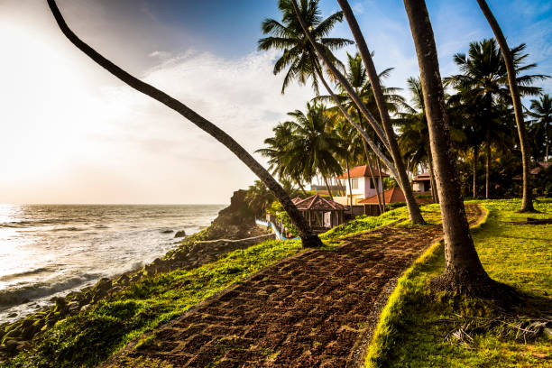
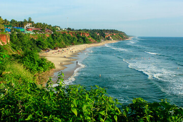
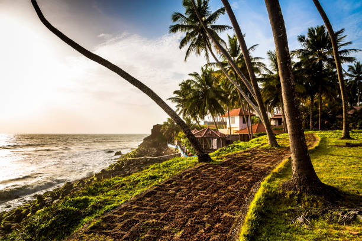
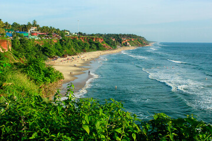
3.Radhanagar Beach
located on Havelock Island in the Andaman and Nicobar Islands, is renowned for its stunning natural beauty
It has been consistently ranked among the best beaches in Asia and even the world.
The beach is known for its pristine white sand, crystal-clear turquoise waters, and lush green surroundings.
The best time to visit this Beach is from October to April when the weather is pleasant and ideal for beach activities
It can be reached by ferry from Port Blair, the capital of the Andaman and Nicobar Islands.
Activities:
> Swimming
> Sunbathing
> Snorkeling
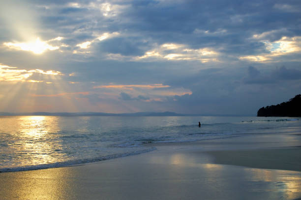
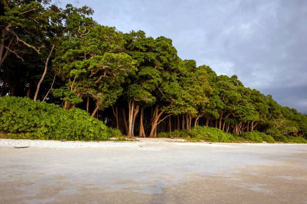
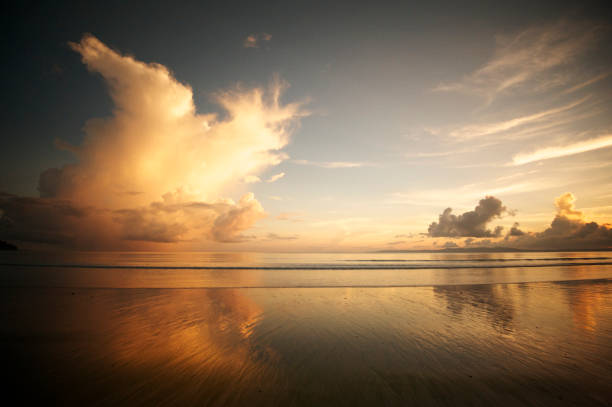
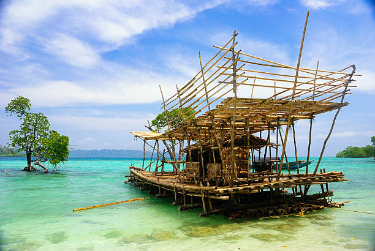
4.Alibaug Beach
Alibaug is a coastal town in the Raigad district of Maharashtra, India.
It’s known for its beaches like Alibag Beach,Varsoli Beach and Nagaon Beach.
You can expect hot And Humid Weather. The Temperature Tends To Go Very High.
Alibaug is also famous for its local cuisine, including fresh seafood and traditional Maharashtrian dishes
The beach is easily accessible from Mumbai, with options for ferry services from the Gateway of India to Mandwa, followed by a short drive to Alibaug.
It offers various water sports activities like
> jet skiing
> parasailing
> banana boat rides.
 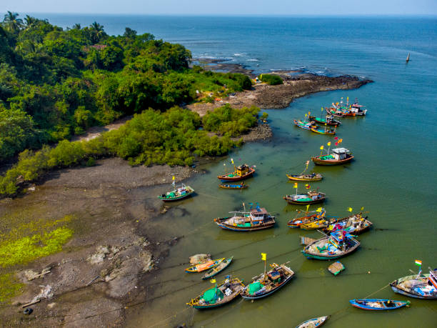
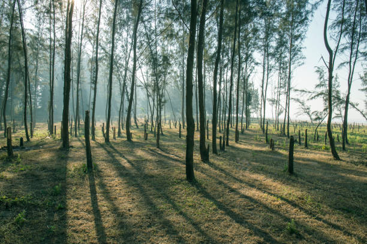
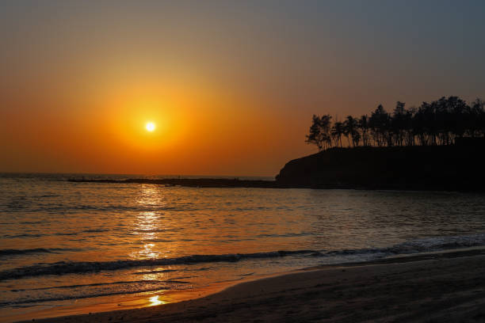
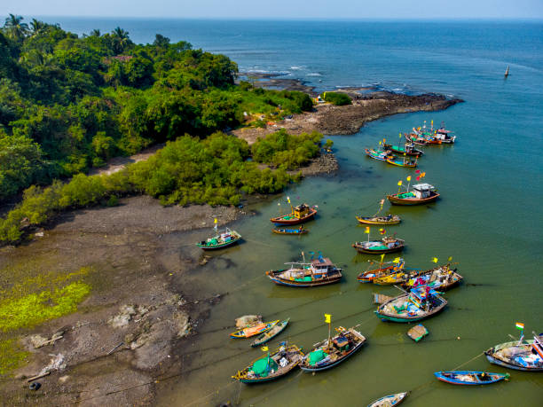
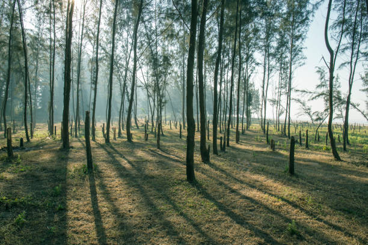
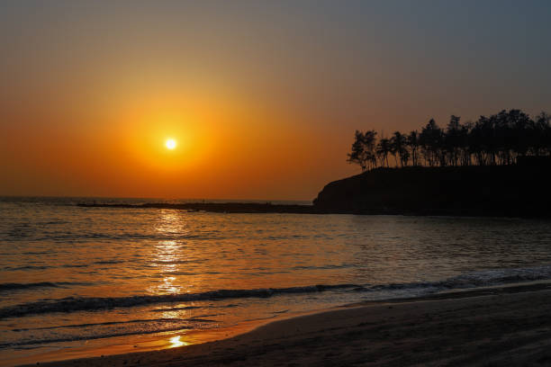
5.Daman and Diu
The most famous beach in this region is Nagoa Beach in Diu.
Nagoa Beach is renowned for its stunning natural beauty, with a semi-circular shape and palm-fringed shores.
The turquoise waters and clean sands make it a perfect spot for relaxation and leisure.
The beaches in Daman and Diu are laced with palm trees and marvellous in their aesthetic appeals.
The beach offers a variety of water sports activities including > swimming > parasailing > water skiing > jet skiing > windsurfing.
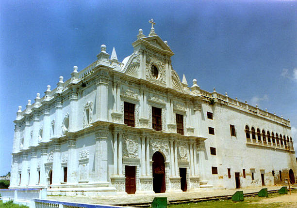
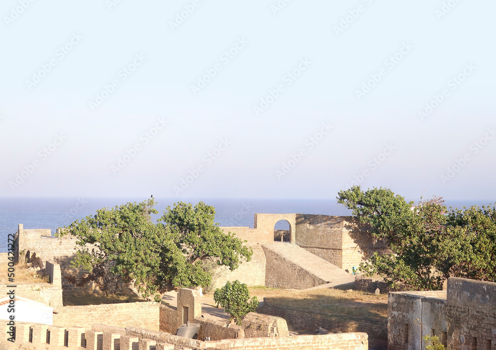
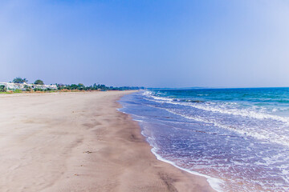
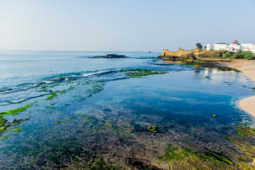